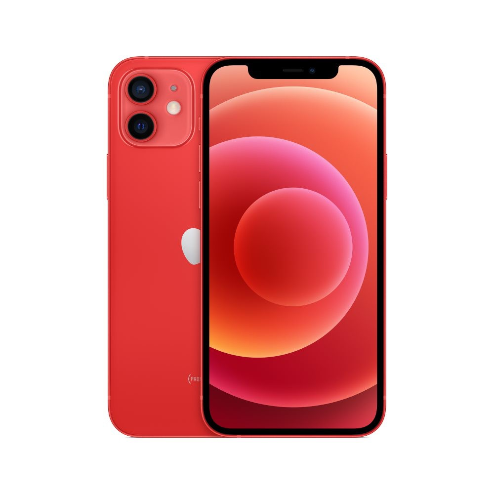

NETWORK Technology
GSM / CDMA / HSPA / EVDO / LTE / 5G
LAUNCH Announced 2020, October 13
Status Available. Released 2020, October 23
BODY Dimensions 146.7 x 71.5 x 7.4 mm (5.78 x 2.81 x 0.29 in)
Weight 164 g (5.78 oz)
Build Glass front (Gorilla Glass), glass back (Gorilla Glass), aluminum frame
SIM Single SIM (Nano-SIM and/or eSIM) or Dual SIM (Nano-SIM, dual stand-by) - for China
IP68 dust/water resistant (up to 6m for 30 mins)
Apple Pay (Visa, MasterCard, AMEX certified)
DISPLAY Type Super Retina XDR OLED, HDR10, 625 nits (typ), 1200 nits (peak)
Size 6.1 inches, 90.2 cm2 (~86.0% screen-to-body ratio)
Resolution 1170 x 2532 pixels, 19.5:9 ratio (~460 ppi density)
Protection Scratch-resistant ceramic glass, oleophobic coating
Dolby Vision
Wide color gamut
True-tone
PLATFORM OS iOS 14.1, upgradable to iOS 14.4
Chipset Apple A14 Bionic (5 nm)
CPU Hexa-core (2x3.1 GHz Firestorm + 4x1.8 GHz Icestorm)
GPU Apple GPU (4-core graphics)
MEMORY Card slot No
Internal 64GB 4GB RAM, 128GB 4GB RAM, 256GB 4GB RAM
NVMe
MAIN CAMERA Dual 12 MP, f/1.6, 26mm (wide), 1.4µm, dual pixel PDAF, OIS
12 MP, f/2.4, 120˚, 13mm (ultrawide), 1/3.6"
Features Dual-LED dual-tone flash, HDR (photo/panorama)
Video 4K@24/30/60fps, 1080p@30/60/120/240fps, HDR, Dolby Vision HDR (up to 30fps), stereo sound rec.
SELFIE CAMERA Dual 12 MP, f/2.2, 23mm (wide), 1/3.6"
SL 3D, (depth/biometrics sensor)
Features HDR
Video 4K@24/30/60fps, 1080p@30/60/120fps, gyro-EIS
SOUND Loudspeaker Yes, with stereo speakers
3.5mm jack No
COMMS WLAN Wi-Fi 802.11 a/b/g/n/ac/6, dual-band, hotspot
Bluetooth 5.0, A2DP, LE
GPS Yes, with A-GPS, GLONASS, GALILEO, QZSS
NFC Yes
Radio No
USB Lightning, USB 2.0
FEATURES Sensors Face ID, accelerometer, gyro, proximity, compass, barometer
Siri natural language commands and dictation
Ultra Wideband (UWB) support
BATTERY Type Li-Ion 2815 mAh, non-removable (10.78 Wh)
Charging Fast charging 20W, 50% in 30 min (advertised)
USB Power Delivery 2.0
Qi magnetic fast wireless charging 15W
Stand-by Up to 17 h (multimedia)
Music play Up to 65 h
MISC Colors Black, White, Red, Green, Blue
Models A2403, A2172, A2402, A2404
SAR EU 0.99 W/kg (head) 0.99 W/kg (body)
Price ₹ 79,470 / $ 779.00 / £ 715.00 / € 822.28
TESTS Performance AnTuTu: 568674 (v8)
GeekBench: 4067 (v5.1)
GFXBench: 58fps (ES 3.1 onscreen)
Display Contrast ratio: Infinite (nominal)
Camera Photo / Video
Loudspeaker -24.4 LUFS (Very good)
Battery life
Endurance rating 84h